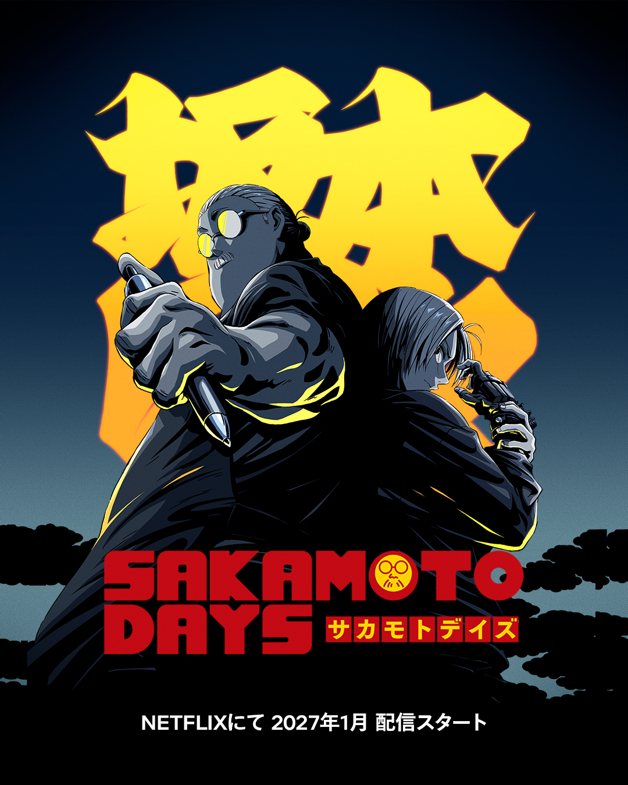
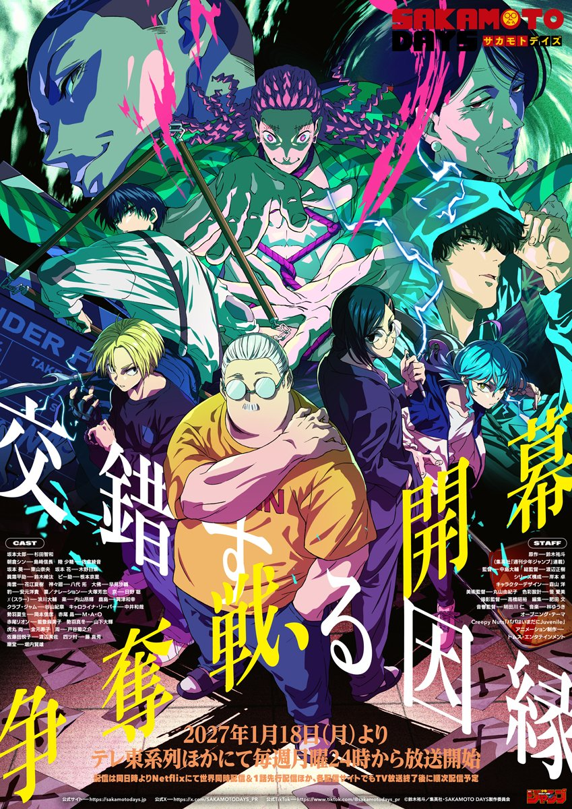

¡Temporada 2
en enero 2027!
Llega por TV Tokyo y Netflix, al mismo tiempo que en Japón.
Arte: Netflix Japón

Llega por TV Tokyo y Netflix, al mismo tiempo que en Japón.
Arte: Netflix Japón

A las 24:00 (hora de Japón) por TV Tokyo y canales afiliados.
En Netflix, a la vez que en Japón.
© 鈴木祐斗/集英社・SAKAMOTO DAYS製作委員会
「パパはいまだに
Juvenile」
Papa wa imada ni Juvenile
「交錯する因縁
争奪戦、開幕」
Viejas rencillas que se cruzan. Arranca la batalla.Traducción libre
Fuentes: Oricon News, Netflix Japón y cuentas oficiales del anime
Síguenos para más noticias de anime
@tansakustore